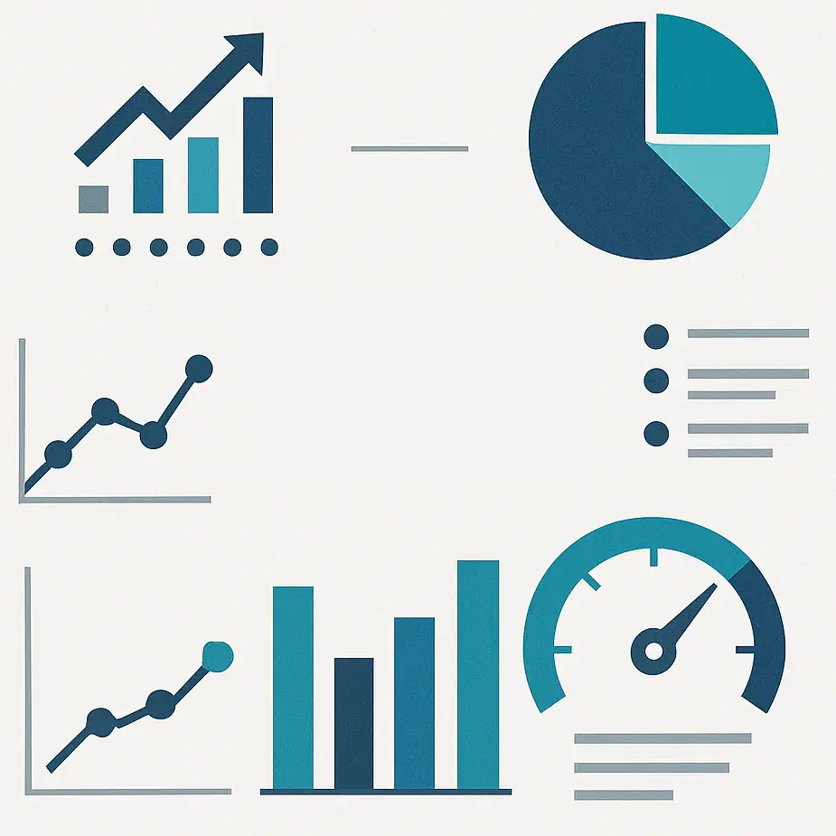
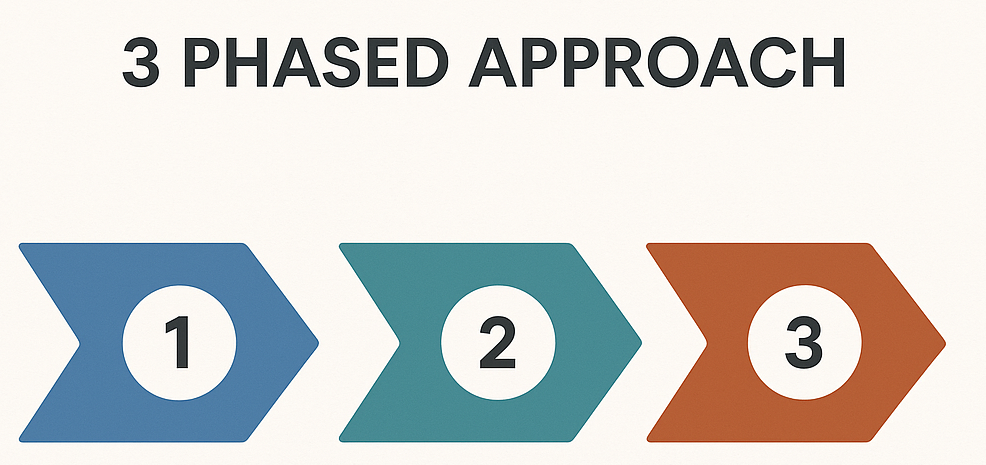

Project Overview
A standardized framework for Security Tool Metrics collection, processing, and reporting - across client engagements.
Problem Statement
- Current engagement setup can often take days of custom work
- Inconsistent reporting across different security vendors
- Manual data processing is time-intensive
- Difficult to compare metrics across tools
Project Goals
- Accelerate Engagement Setup: Reduce setup from days to <30 minutes using automated templates.
- Ensure Data Consistency: Create a reusable framework for security metrics across different vendor tools.
- Streamline Workflows: Standardize data ingestion, processing, and presentation workflows for efficiency.
- Enhance Reporting: Enable consistent, high-quality reporting formats for client deliverables.
- Improve Scalability: Build a foundation for easily integrating new tools and expanding metric capabilities.
Success Criteria
- Framework deployable for a new client in <30 minutes
- A truly vendor-agnostic processing pipeline
- Standardized output formats (PDF, Excel, Power BI, etc.)
- Reusable visualization components for notebooks
Technical Architecture
1. Ingest
Vendor Data ➔ Standardized JSON ➔ Validated Pydantic Model
2. Process
Transform and enrich data based on client-specific business logic and requirements.

3. Present
Export processed data to client-specified formats (PDF, Excel) and interactive notebooks.

Example Standardized Metrics
- Risk Distribution: Vulnerabilities categorized by severity across organizational units
- Coverage Analysis: Scan frequency, asset discovery rates, and scanning gaps
- Remediation Performance: Mean time to remediation (MTTR) and closure rates
- Risk Concentration: Highest-risk systems and vulnerability hotspots
- Trend Analysis: New findings compared to previous reporting periods
- Cross-Tool Correlation: Vulnerability overlap detection across multiple scanners
Core Components & Libraries
Framework
- Pydantic Models
- Vendor Wrappers
- Marimo Notebooks
- Cookiecutter Templates
Libraries
- Conversion: Pandoc
- Logging: Loguru
- CLI: Click
- Debug Print: Icecream
Relevant Links
- Cookiecutter - CLI for project templating
- Marimo - Interactive Python notebooks
- Checkmarx AST CLI - Tool for Checkmarx integration
Current Status & Next Steps
Current Status
- Architecture Complete: Three-phase framework designed and validated
- Checkmarx Integration: 80% functional with CLI wrapper and data models
- Core CLI: Ingest, validation, and JSON export capabilities operational
- Tenable Adapter: In active development by Derek with API integration
- Documentation: Updated to reflect current implementation state
Next Steps
- Derek's Current Focus:
- Build the Tenable adapter + Work on Directory Stucture
- My Current Focus:
- Complete core CLI functionality (PDF, Excel, CSV exports).
- Complete Checkmarx CLI wrapper integration.
- Upcoming Tasks:
- Expand test coverage for all new features.
- New Metric Visualizations and Queries within Marimo
- Neo4J GraphDB Integration